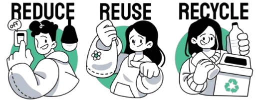
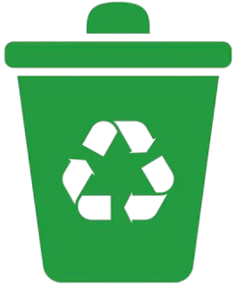
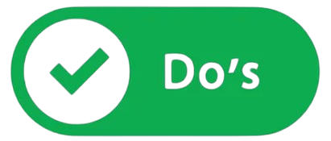

The Earth Nowadays

3R
Reducing focuses on minimizing waste by making thoughtful choices in consumption. This includes selecting products with minimal packaging, avoiding single-use items, and prioritizing essentials over excess. By reducing waste at its source, natural resources are conserved, energy usage is lowered, and the strain on landfills is significantly reduced.
Reusing emphasizes giving items a second life through repurposing or extended use. Old jars can become storage containers, clothing and furniture can be donated, and reusable bags, bottles, or utensils can replace disposable ones. This practice reduces the demand for new products, preserves resources, and contributes to sustainability by maximizing the value of materials.
Recycling transforms waste materials into new products, reducing the need for raw resources and preventing landfill overflow. Materials such as paper, plastic, metal, and glass are processed into new items, conserving energy and lowering greenhouse gas emissions. Recycling promotes environmental protection and supports the creation of a circular economy.
Local Recycle Program 
Types of Recycle Bin
- Collects items like newspapers, magazines, cardboard, and office paper. It prevents contamination and supports the recycling of paper into new products like notebooks and packaging materials.
- Used for disposing of glass bottles, jars, and other glass items. Ensures safe handling and allows the glass to be melted down and reshaped into new containers or construction materials.
- Accepts aluminum cans, tin containers, and other metal scraps. Recycled metals are melted and repurposed into new products, reducing the need for mining raw materials.
Do and Don'ts
- Do Sort Properly
- Do Rinse Containers
- Do Flatten Boxes
- Do Use Designated Bags
- Do Check Labels
- Do Include Dry Items
- Do Recycle Electronics Responsibly
Ensure items are placed in the correct bin (e.g., paper in the blue bin, glass in the brown bin, and plastics/metals in the orange bin).
Clean food residue from containers like jars, cans, and bottles before recycling.
Break down cardboard boxes to save space in the bin.
If required, use clear or specific recycling bags to store materials.
Follow local recycling guidelines and bin labels to avoid contamination.
Make sure recyclables are dry to prevent mold or damage.
Take e-waste to designated drop-off points instead of putting them in standard recycling bins.

- Don’t Contaminate
- Don’t Bag Recyclables (Unless Required)
- Don’t Include Hazardous Waste
- Don’t Recycle Plastic Bags
- Don’t Overfill the Bin
- Don’t Include Sharp Objects
- Don’t Assume Everything is Recyclable
Avoid placing non-recyclable items like food waste, greasy pizza boxes, or disposable diapers in recycling bins.
Loose items are better for sorting, so avoid bagging unless specified by your local program.
Batteries, chemicals, and medical waste should never go in standard recycling bins.
These should be taken to special collection points, not placed in curbside bins.
Ensure the lid can close properly to prevent windblown litter.
Items like broken glass or needles should be disposed of through proper waste channels, not recycling bins.
Always double-check local guidelines before recycling unfamiliar items.
Here is a simple video about how to sort the waste:
Malaysia Recycle Program
| Company Name | Description | Activity | Locations |
|---|---|---|---|
| SWCorp Malaysia (Solid Waste and Public Cleansing Management Corporation) | SWCorp oversees solid waste management and public cleansing efforts in Malaysia. | - Promotes waste separation at source. - Runs public awareness campaigns on recycling and waste reduction. |
Includes areas like Kuala Lumpur, Putrajaya, and parts of Selangor, Johor, Melaka, Pahang, Kedah, Perlis, and Negeri Sembilan. |
| KitaRecycle (Alam Flora) | Managed by Alam Flora, KitaRecycle encourages recycling through a reward-based system. | - Users can register via the KitaRecycle mobile app. - Recyclable items like plastics, paper, and metals can be deposited at designated drop-off points. - Earn points redeemable for rewards. |
Operates in areas under Alam Flora's jurisdiction, such as Kuala Lumpur, Putrajaya, and Pahang. |
| E-Waste Recycling Program (DOE Malaysia) | A program by the Department of Environment (DOE) focusing on the proper disposal of electronic waste (e-waste). | - Collects items like old phones, laptops, and batteries. - Drop-off points at licensed facilities or during e-waste collection campaigns. |
Includes areas like Kuala Lumpur, Putrajaya, and parts of Selangor |
| Tetra Pak Malaysia Recycling Program | Focuses on recycling beverage cartons such as milk and juice boxes. | - Partnerships with schools and recycling centers to collect used Tetra Pak cartons. - Encourages proper rinsing and flattening of cartons before recycling. |
Available at selected recycling centers and supermarkets. |
| MYSaveFood (Food Waste Management Program) | A collaboration between the Malaysian government and SWCorp to address food waste. | - Promotes composting organic waste at home. - Public campaigns to reduce food wastage and recycle organic materials. |
- |